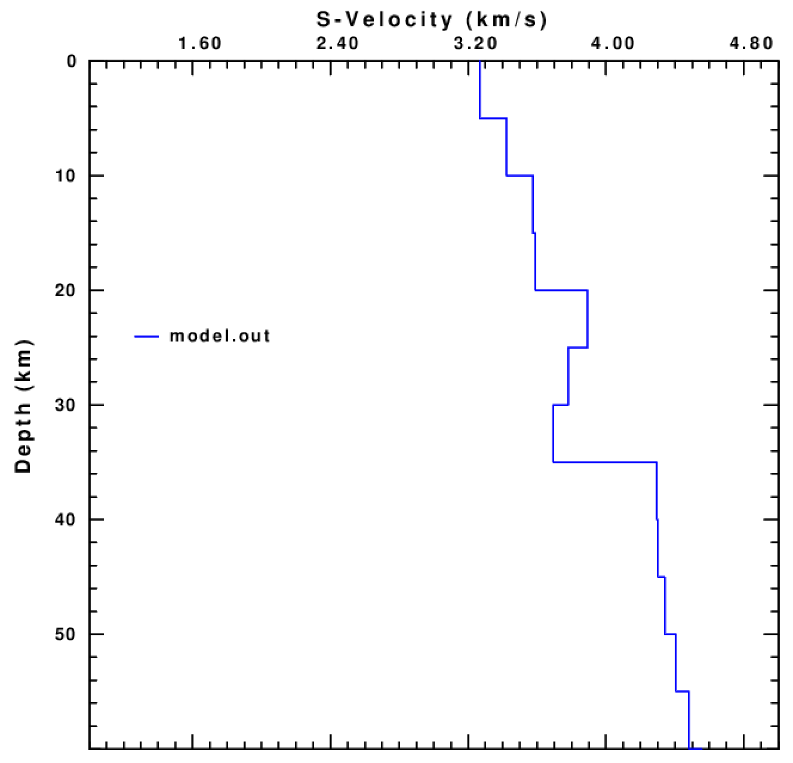
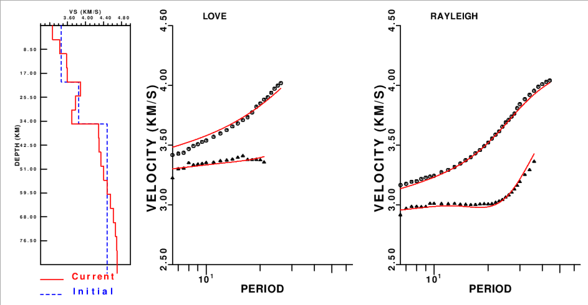

6. Inversión 1D
En este ejercicio invertiremos curvas de dispersión para obtener un modelo de velocidad 1-D de la onda S.
En primer lugar ir al directorio de trabajo:
$ cd
$ cd exercises/inversion
Archivos:
surf_inv.sh: script para realizar la inversiónak135.mod: archivo con la descripción del modelo ak135, utilizado como modelo inicialtest.disp: archivo de prueba con curvas de dispersión para invertirP_*_*.disp: archivos con curvas de dispersión para varios puntos latitud, longitud
Editar el archivo test.disp para ver qué curvas (RC, LC, ...) están incluidas en el archivo:
$ gv test.disp
Para invertir las curvas de dispersión en test.disp utilizando ak135.mod como modelo inicial:
$ surf_inv.sh test.disp ak135.mod
El programa genera varios archivos de salida:
model.out: modelo resultante de la inversiónMODEL.eps: archivo PostScript con el dibujo del modelo finalDATAFIT.eps: archivo PostScript con plots del modelo final y del ajuste de los datos (curvas de dispersión)
Para visualizar los resultados:
$ gv MODEL.eps

$ gv DATAFIT.eps

Utilizar otros archivos de dispersión (P_*_*.disp) como entrada para la inversión
y otros modelos iniciales.